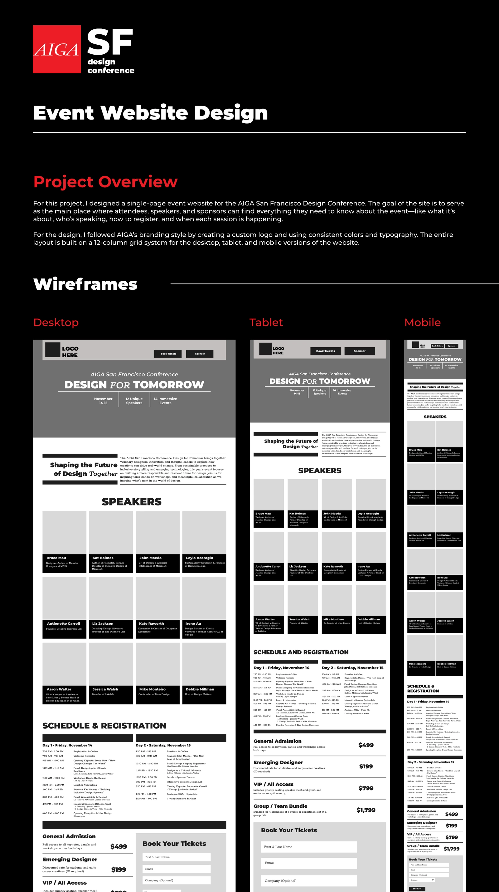
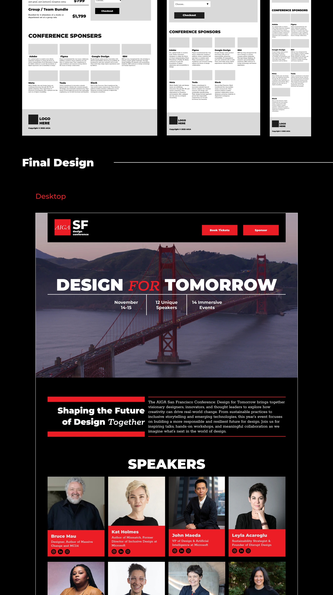
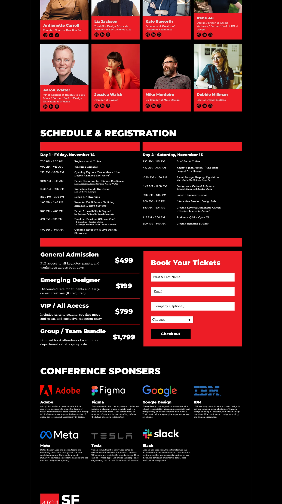
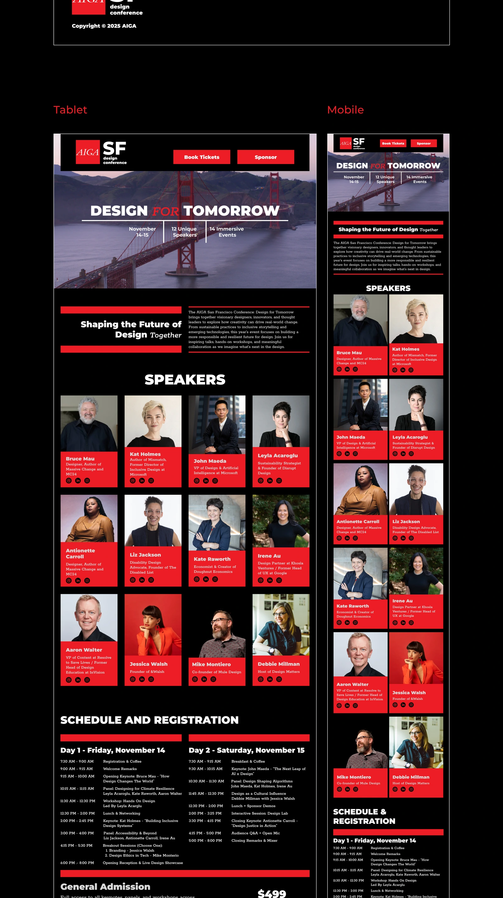
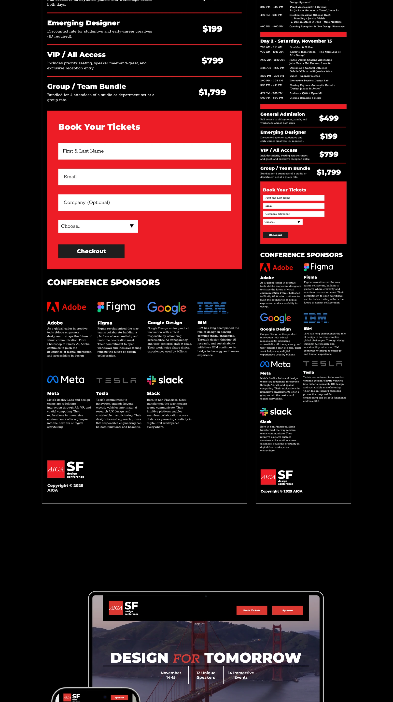
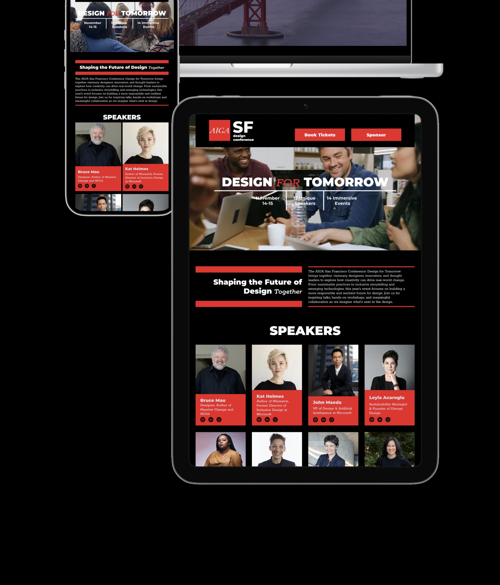

Read project overview
A single-page event website design for the AIGA San Francisco Design Conference. The design uses AIGA’s existing identity and a four-column grid to help visitors learn about the conference, its speakers, and its events. The case study includes desktop, tablet, and mobile wireframes, final designs, and device mockups.





